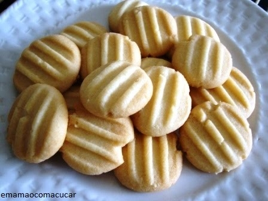

Butter Cookies

These butter cookies are really easy to make, and only use ingredients that you probably already have at
home. They're delicious and get ready in just a couple minutes.
Ingredients:
- 300g of flour
- 200g of butter
- 100g of sugar
- 1 scoop of vanilla essence (optional)
How to make:
- Pre-heat the oven at 280C.
- Put all the ingredients together in a bowl and mix them until they become a uniform pasta.
- Make little "snakes" out of the pasta.
- Cut the "snakes" into cookies. Try to make them the same size.
- Use a fork to pierce the cookies
- Put the cookies in the oven until they get that golden color.
Done! Ready to eat and easy to make.